In the previous walkthrough we created our AADB2C tenant and configured an identity token flow. These steps integrated our Coding Events API with our AADB2C tenant as a centralized identity manager. At this point the API can use OIDC to authenticate the identity of users in the AADB2C tenant.
In this walkthrough we will explore the other half of AADB2C – protecting applications using access tokens. We can use OAuth access tokens as a means of delegating authorization for one service to interact with another service on behalf of a user.
An API can only be consumed by client applications. We can use AADB2C as an authorization server to protect our API by restricting access to only registered applications. In our case we will use Postman as the consuming client application.
The goal of this walkthrough is to configure AADB2C to grant access tokens to the Postman client application. These tokens will need to include a scope that authorizes Postman (the token bearer) to interact with the protected application (Coding Events API) on behalf of a user.
To accomplish this task we will need to:
user_impersonation scope for accessing the Coding Events APIuser_impersonation scopeIn the following Studio you will then update your Coding Events API source code to integrate with AADB2C and deploy it. Then you will use Postman and an access token to make authorized requests to the final version of the API.
The final branch of the Coding Events API includes many additions to the code base. Beyond the AADB2C integration, the update supports Role Based Access Control (RBAC) and Attribute Based Access Control (ABAC). These industry terms describe patterns that are used for organizing logical rules which enforce authorization.
Tip
If you would like to learn more about RBAC and ABAC this article provides a great description of their similarities, differences and usages.
This version of the Coding Events API includes logic that restricts access to resources based on the following:
Public User (anonymous), Authenticated UserCoding Event Membership, Coding Event OwnershipIn addition to this authorization logic and the CodingEvent resource you saw before, the API now includes the Member and Tag resources. Because there are many more endpoints available in this version of the API you will find a Postman collection file in the repo that you can import.
In the final branch of the API (3-aadb2c) the coding-events-api/CodingEventsAPI project directory contains the Postman collection file called Postman_AADB2C-CodingEventsAPI-Collection.json. In the next step we will import this file into Postman.
This walkthrough will require working in both the Azure Portal on AADB2C as well as Postman to configure its requests for access tokens. We will begin by setting up Postman before switching to the Azure Portal.
Note
After this initial setup each of the subsequent steps will require you to switch between your browser and Postman to copy values from the Azure Portal into Postman.
Warning
Make sure you switch to the 3-aadb2c branch in your forked coding-events-api repo before continuing.
Open Postman and select the Import button (next to New):
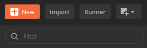Select the Upload Files button and then navigate to the collection file in your project directory:
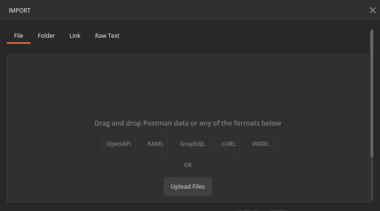Select the Import button to import the collection:
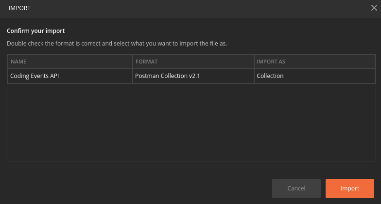On the right side of the new collection click the three dots then select Edit:
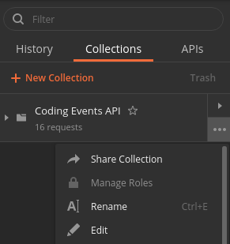From the edit collection modal select the Authorization tab:
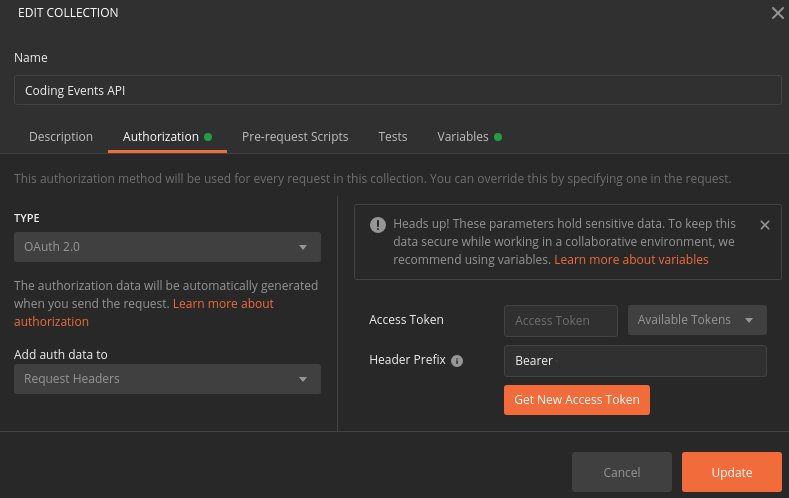In addition to the endpoints and organizing directories, this imported collection comes with many of the Authorization settings pre-configured for you. From this tab you can see it has already been configured to use OAuth for getting an access token. After getting the access token it will be automatically sent in the Authorization request header for every request made within the collection.
The Bearer prefix will be used to indicate that Postman is the bearer of a token that authorizes its requests for interacting with the API on behalf of its subject, the AADB2C user who authorized it. The updated API then extracts and validates this token before processing the request using its RBAC and ABAC rules.
Selecting the Get New Access Token button will open a modal with a form for configuring the access token request:
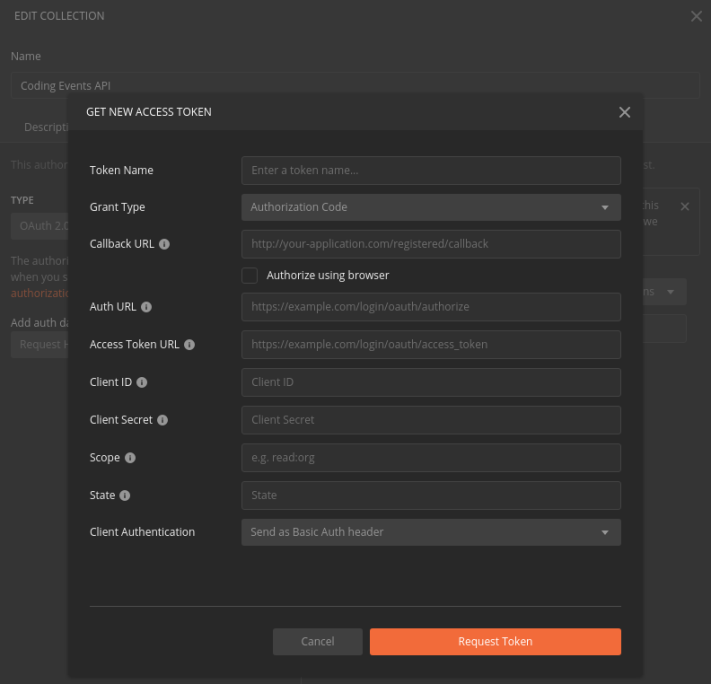This form allows you to define all of the information needed to request an access token. At this point it is empty but you can configure the first field:
access tokenThroughout this walkthrough we will configure this form so Postman can request access tokens from our AADB2C service. By the end of the walkthrough you will have updated the following fields:
Implicit (since we will be using the implicit grant flow)user_impersonation scope exposed by the registered Coding Events API applicationNote
Leave this form open in Postman and switch over to the Azure Portal in your browser.
In this step we will configure AADB2C to protect our API. We will be setting up and exposing the user_impersonation scope that Postman will use. At the end of this step you will copy over the URI of this scope into the value for the Scope field in the Postman form.
First navigate to your AADB2C tenant directory. Then select the Coding Events API under App Registrations.
user_impersonation Scope for the API¶From the Coding Events API application dashboard select the Expose an API settings from the left panel. From this view we can create and expose scopes used for restricting access to our API.
Select the Add a scope button:
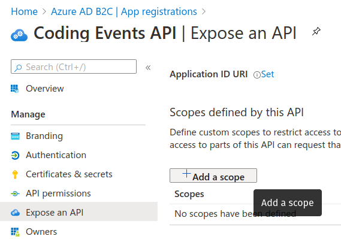Since this is the first scope exposed for our API we will need to register its application ID URI. This is a unique identifier that associates the exposed scopes to this specific registered application. By default it will use the registered application’s client ID.
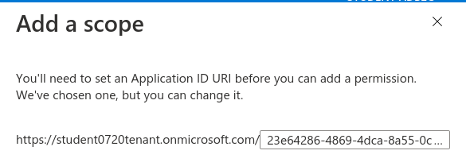Select Save and continue to proceed to the new scope form.
We will be exposing a user_impersonation scope for our API. This scope is what the Postman client application will request access to in order to send requests to the API on behalf of the user. Enter the following values for each of the scope form fields:
user_impersonationUser impersonation access to APIAllows the Client application to access the API on behalf of the authenticated userAfter the scope has been registered copy the scope URI (using the blue copy icon next to it):
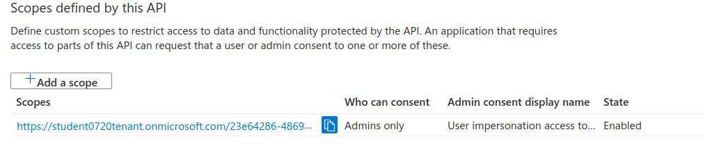Switch back to Postman and replace the Scope field with the copied value.
Warning
Before continuing make sure you have updated the Postman form:
user_impersonation scopeNow that our API has exposed its user_impersonation scope we will register our Postman client application to consume it. Using the Azure AD B2C | App registrations breadcrumb link in the top left corner go back to the app registrations view.
Select New registration:
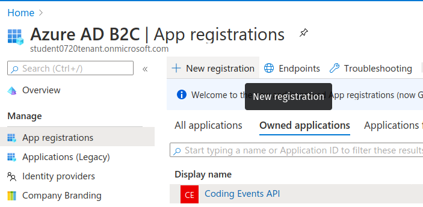Just as before we will leave all the defaults except for the name and redirect URI. In the app registration form use the following values:
Postmanhttps://jwt.msWe will be registering two redirect URIs for this application. The first will use the Microsoft JWT tool so that we can explore the access token (like we did for the identity token in the previous walkthrough). The second will be the redirect URI used when performing the OAuth flow from Postman. We will register the latter URI in the next section.
After registering the Postman application it will send you to its application dashboard. Copy the client ID to your clipboard using the copy icon to the right of it:
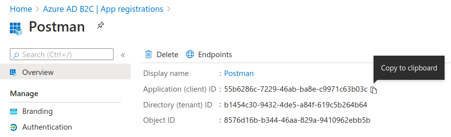Switch back to Postman and replace the Client ID field with the copied value.
Warning
Before continuing make sure you have updated the Postman form:
We will now configure the Postman application to use the OAuth implicit flow and set the redirect URI. On the left sidebar select the Authentication settings.
In the Web - Redirect URIs add a new entry under the existing one. Select add URI and paste in the following value which Postman uses for handling OAuth redirects:
https://www.postman.com/oauth2/callbackAs a reminder, this is where a user will be redirected after authenticating with AADB2C. When using the implicit flow the token(s) will be present as query string parameters attached to this URI.
Switch back to Postman and replace the Callback URL field with this value.
Warning
Before continuing make sure you have updated the Postman form:
https://www.postman.com/oauth2/callbackThen scroll down to the Implicit grant section and, just as before, select the checkboxes for both:
Check that your configuration matches the picture below then select Save:
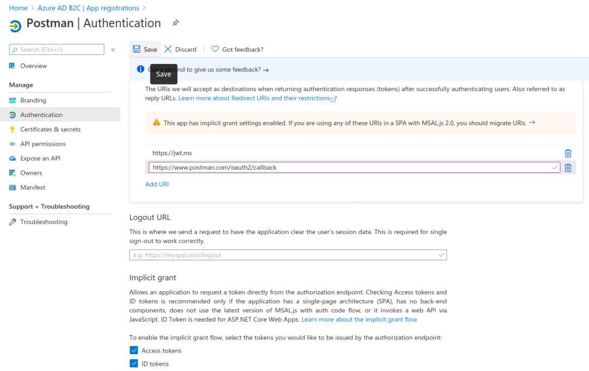Switch back to Postman and update the Grant Type field to reflect this configuration.
Warning
Before continuing make sure you have updated the Postman form:
Implicit (the grant type used by the registered Postman application)In this step we will configure the Postman application to use the user_impersonation scope exposed by the Coding Events API application. To do this we will need to grant admin permissions for this scope.
In the sidebar select the API permissions settings. Then select the Add a permission button:
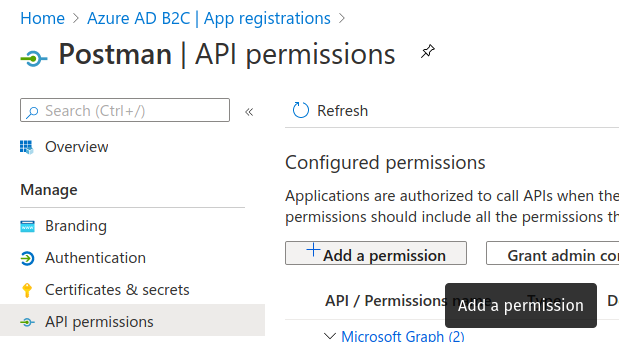This will open a sidebar for configuring the permissions. Select the My APIs tab on the right side then select the Coding Events API application from the list:
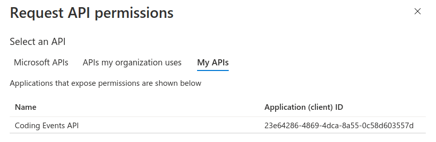From here we can select the scopes for the selected API (Coding Events API) that we would like to grant permissions for this application (Postman) to use. Select the user_impersonation scope then select Add Permission:
This scope is not valid until an admin has granted permission for the Postman application to use it. Select the Grant admin consent for <Name> ADB2C button to grant it.
Note
This is a tenant-wide permission that will apply to your AADB2C tenant. Student is used as a generic placeholder in the image below.
After confirming your decision your configuration should match the image below.
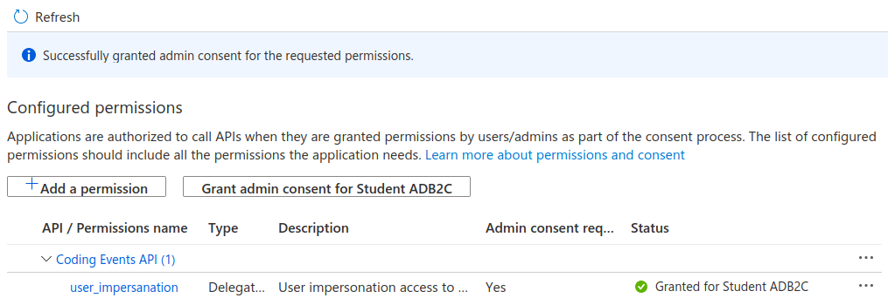Let’s take stock of what we have done so far:
user_impersonation scope for access tokens used to protect our Coding Events APIuser_impersonation scope in the access tokens it will use in requests sent to the APIIn parallel with this setup we have also been configuring the Postman form with the values it needs to request an access token from your AADB2C service. The final field we need to update is the authorization URL (Auth URL in the form). In this step we will copy over this URL and then test out the access token process using the Microsoft JWT explorer tool (jwt.ms).
We can get the URL and test out the process in the User Flows section of our AADB2C service. In the top left corner use the Azure AD B2C | App registrations breadcrumb link to go back to the app registrations view.
Select User Flows:
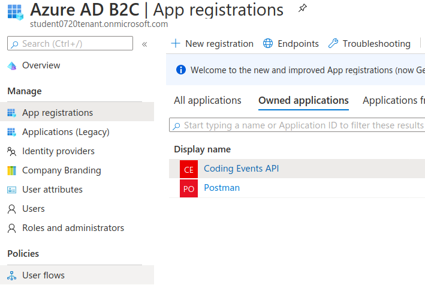Select the SUSI flow we configured in the previous walkthrough:
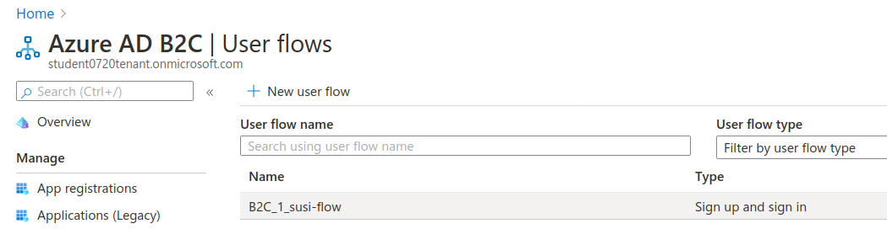From the SUSI flow dashboard select the Run user flow button to open the sidebar:
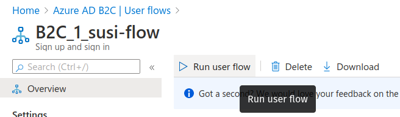At the top of the sidebar is the metadata document link. As a reminder this is the standard OIDC document that formally describes the capabilities and endpoints used to interact with the AADB2C service.
Select this link to open the JSON metadata document:
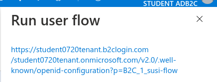From the metadata document copy the authorization endpoint URL to your clipboard:
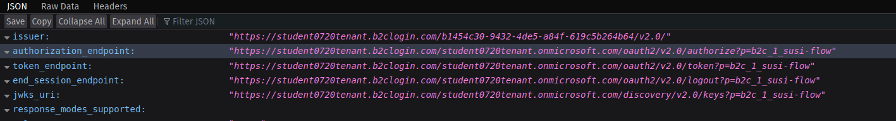Switch back to Postman and replace the Auth URL field with the copied value to complete the form.
Warning
Before continuing make sure you have updated the Postman form:
With the SUSI flow sidebar open let’s configure an access token request that is sent to the Microsoft JWT tool like we did in the previous walkthrough. However, this time we will use it to inspect the claims in the access token rather than an identity token.
First make sure that the following fields are selected:
Postmanhttps://jwt.msThen open the Access Tokens section by clicking on it. We will now define the resource (our protected API) and the scopes (user_impersonation) to request for the access token. Configure the following settings:
Coding Events APIuser_impersonation scopeWarning
Make sure that you unselect the identity token (openid) scope. Only the user_impersonation scope should be selected.
Check that your configuration matches the image below:
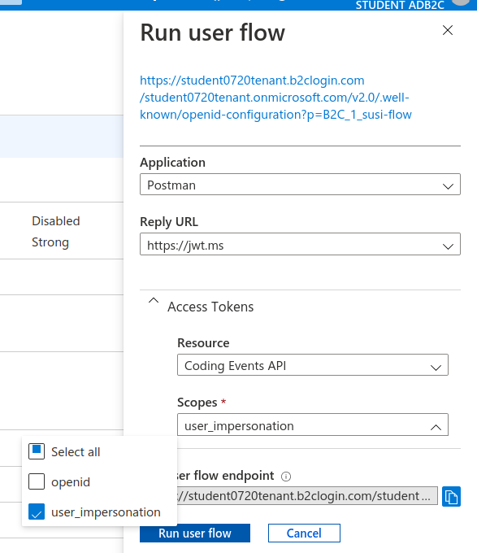Click the Run user flow button to begin the access token flow.
After authenticating with your AADB2C tenant account you will be redirect to the jwt.ms page. Notice that this time the query string parameter is an access_token rather than the identity_token we saw last time.
The access token is provided in the same signed JWT format and in many ways is similar to an identity token. However, it contains several different claims that can be used to verify the authorization of anyone who bears it (Postman client application), rather than just the identity claims.
Select the Claims tab to switch to the detailed breakdown. You will notice three familiar claims, iss, aud and sub. As a reminder these claims indicate:
In addition to these claims that the two tokens have in common, there are several others that are only present in an access token:
user_impersonation in this contextThese claims are each used to prove the authenticity and validity of the token when it is used. In practice, the authorized party (Postman) sends this access token to the intended audience (Coding Events API) for each request to a protected endpoint.
The API is then responsible for validating the claims in the token before processing the RBAC and ABAC rules associated with the subject (the user that Postman acts on behalf of).
Note
Access tokens are purposefully short-lived to limit potential abuse if a malicious party gets a hold of one. By default, the access tokens we receive through AADB2C have a 1-hour lifetime before they expire (visible in the exp[iration] claim).
Because we are using the implicit OAuth flow we do not have access to refresh tokens. If an access token received using an implicit flow expires during use you will need to request a new one by repeating the access token request process.
In the following studio you will deploy the final version of the Coding Events API that integrates with your AADB2C tenant. You will be using Postman to request an access token to test out the protected endpoints of the API. Let’s explore this process together so you are prepared to make use of it in your studio tasks.
Switch back to the Postman access token form you have been updating throughout the walkthrough. There is one final field that needs to be updated, the State field. This field can be any arbitrary value but should be unique to each access token request. It is used to protect against CSRF attacks.
Typically this parameter is used to store the state of a user on a site (like a page to send them back to) or some other unguessable value. For this case, you can enter anything random you would like for the State field to complete the form:
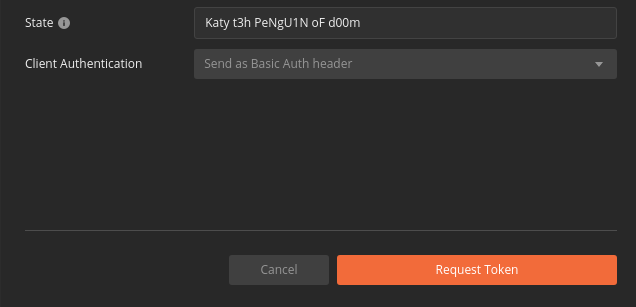Before issuing the request check that you have updated all of the following fields:
access tokenImplicithttps://www.postman.com/oauth2/callbackauthorization_endpoint from the JSON metadata documentuser_impersonation scope URI you exposed for your registered Coding Events API applicationWarning
Leave the defaults for the remaining fields. Make sure that:
Send as Basic Auth headerIf everything has been updated properly you are ready to request your first access token! Select the Request Token button.
This will open a popup to authenticate with your AADB2C tenant. As a reminder your password should be:
LaunchCode-@zure1After successfully authenticating, Postman will receive and store the access token in its tokens list. Select the Use Token button to designate the token Postman should use when making requests to the API:
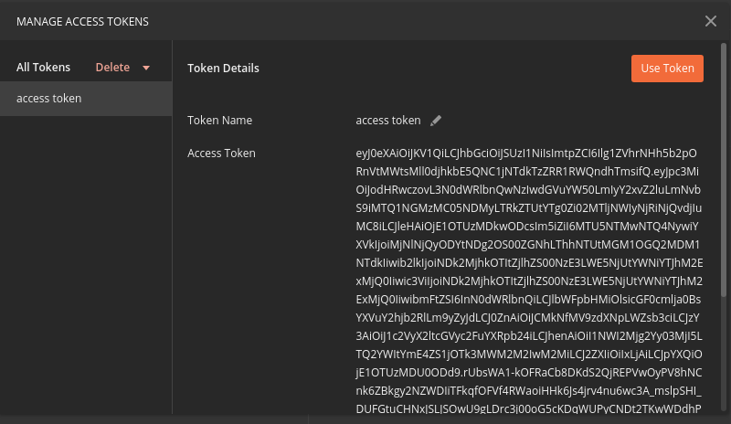Finally you will be returned to the Authorization tab in Postman. This time your access token will be populated:
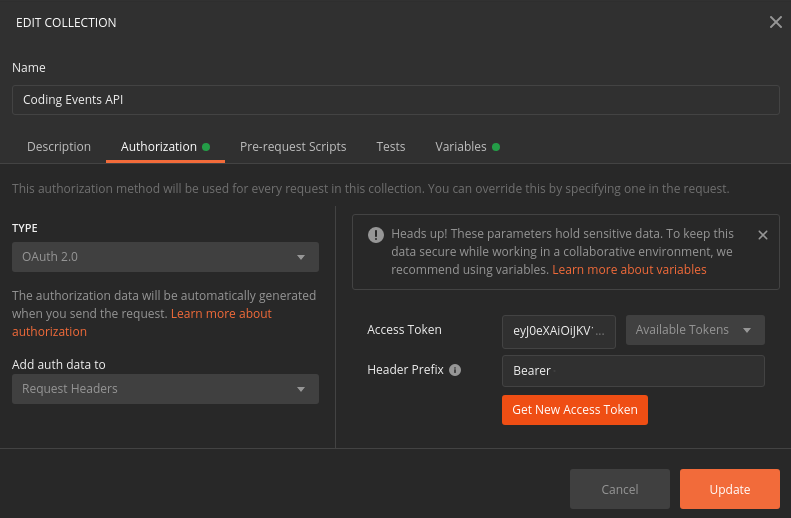Select the Update button to save the changes you have made to the collection. As soon as your API is live you will be able to use Postman to make authorized requests to it using the access token!
As a reminder you will need to request a new access token after one hour due to its expiration. If a request fails during the studio it will likely be due to an expired token.
Postman can detect when a token is expired and will cross it out in the tokens list when it can no longer be used. These tokens can be discarded using the Delete menu or the trash icon when hovering over them:
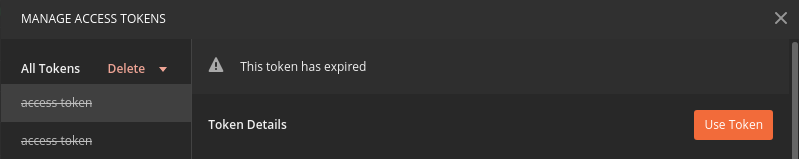Fortunately now that you have everything configured it will be a quick process to request a new access token:
You should then be able to re-issue the requests using the valid access token.